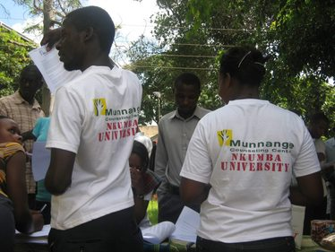
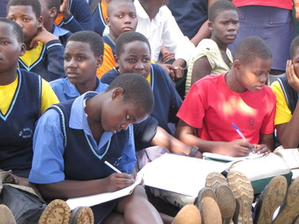

ONTSTAAN
Uit onderzoek gedaan door doctoraat studenten aan Oegandese universiteiten blijkt dat studenten en docenten nood hebben aan psychologische zorg en ondersteuning. De voorbije jaren zag men in Oeganda de zelfdodingscijfers toenemen en ook geweldplegingen doen zich frequenter voor. Tijdens contacten aan de Nkumba University in Entebbe werden we geconfronteerd met de omvang en de gevolgen van psychisch lijden en de emotionele noden waarbij geen of te weinig toegankelijke hulp wordt geboden. Er is gebrek aan personeel, aan knowhow en aan een concreet hulpverleningsaanbod op scholen en universiteiten om aan deze psychologische en emotionele noden tegemoet te komen. Studenten en docenten worden geconfronteerd met familiale problemen, moeilijke thuissituaties, seksuele problemen, emotionele problemen en gezondheidsproblemen (HIV/Aids) en trekken aan de alarmbel.
Vanuit de overtuiging dat we een verschil kunnen maken werd in 2011, in samenwerking met Nkumba Univeristy, vzw Munnange opgericht. Munnange betekent "mijn vriend" in het Luganda, één van de meest gesproken talen in Oeganda.
MISSIE EN VISIE
Vzw Munnange denkt met een open geest, vanuit respect voor elke eigenheid, godsdienst of kleur.
Wij vinden het voor onszelf onaanvaardbaar om in een wereld te leven waarin intelligente en gemotiveerde studenten en docenten die graag hun steentje willen bijdragen aan de ontwikkeling en vooruitgang van hun land die kans niet krijgen omdat ze teveel en te vaak benomen worden door zorgen, persoonlijke problemen en/of familiale spanningen.
Wij willen Oegandese studenten en docenten aan Nkumba University in Entebbe, maar ook de omliggende communities, de kans geven een beroep te doen op goed geschoolde en neutrale counsellors bij wie zij hun verhaal kwijt kunnen, een luisterend oor vinden, begeleiding kunnen krijgen, doorverwezen kunnen worden naar andere hulpverlening, kortom bij wie ze een plek vinden om tot rust te komen. Via gastcolleges en workshops aan Nkumba University zorgen wij samen met Vives-Ipsoc voor de nodige uitwisseling van kennis en expertise. Via deze weg wil vzw Munnange komen tot een verbetering van het onderwijs als bouwsteen van een solide samenleving. Vzw Munnange vertrekt vanuit het eigen krachtmodel, dwz dat we de competenties en krachten die reeds aanwezig zijn, willen versterken. Een maatschappij kan sterker groeien vanuit kennis veeleer dan enkel vanuit caritatieve of materiële hulp.
DOELSTELLINGEN
Vzw Munnange wil zich richten op structurele veranderingen, veeleer dan op individuele veranderingen of het lenigen van individuele noden en concentreert zich op de doelstelling van het uitbouwen van een aanbod voor psycholgische hulpverlening in Oeganda:
1. Centrum voor psychologische hulpverlening op de campus van Nkumba University:
Het Munnange Counselling Centre werd officieel geopend in april 2012 en heeft sinds oktober 2013 drie deeltijdse en betaalde Oegandese counsellors in dienst, nl Lucy, Hazel en Jamilah. Het hulpverleningsaanbod bestaat vandaag voornamelijk uit psychologische zorg voor studenten en docenten van de universiteit maar is ook voldoende toegankelijk voor de omliggende communities (out-reaching).

2. Outreachende hulpverlening:
Sinds onze oprichting kregen we verscheidene vragen van organisaties en scholen in de directe omgeving van Nkumba University om counselling sessies voor hun doelgroep te organiseren. Uiteindelijk gingen we met twee scholen een intensieve samenwerking aan. Early learning School en St Noah Secondary School. Early Learning School is een opvangcentrum en school voor weeskinderen, kinderen van ouders die in de gevangenis verblijven of kinderen die door hun gezin worden verstoten. Munnange biedt er zowel individuele counselling als groepscounseling aan. De kinderen en jongeren geven aan dat deze gesprekken hen kracht geven en het dagelijks leven een beetje lichter maken. St Noa Secondary School richt zich vooral op kinderen en jongeren uit vissersgezinnen. Deze gezinnen worden nog al te vaak gekenmerkt door alcoholmisbruik, familiaal geweld, weinig betrokkenheid van ouders op kinderen. De directie van St Noah verwijst jongeren op regelmatige tijdstippen door naar Munnange Counselling Centre en contacteert onze medewerkers om te bemiddelen en te ondersteunen wanneer er zich op school problemen voordoen.  
3. Sattelietkantoor in Kisubi Hospital:
In oktober 2013 startten we ook een satteliet kantoor in Kisubi hospital, zo'n 5km van de campus van Nkumba University. Na een aantal verkennende gesprekken met dr Robert gingen we in op de vraag om een vaste Munnange counsellor op vaste momenten te detacheren naar het hospitaal. Wij geven daar counselling, zowel aan ambulante als aan residentiële patiënten. We zijn ontzettend blij met deze stap want het betekent dat we ons verankeren in bestaande gezondheidsorganisaties waardoor we de toekomst van ons project verzekeren op lange termijn.

Aangezien we merken dat de vraag naar hulpverlening groot is en er hier een beperkt hulpverleningsaanbod voor is in Oeganda, hopen we in de toekomst ons outreachende hulpverlening verder uit te kunnen breiden. We proberen ook kennis en expertise uit te wisselen vanuit België, dit in samenwerking met de Katholieke Hogeschool VIVES. Er werden al verschillende workshops en conferenties georganiseerd op de campus van Nkumba University om de opleiding "Psychological guidance and counselling" te versterken, wat op termijn zal leiden tot een uitgebreid sociaal en professioneel netwerk en tot nog beter geschoolde counsellors. Dankzij de Katholieke Hogeschool VIVES worden er ook internationale stages georganiseerd waarbij studenten projecten uitwerken in functie van vzw Munnange.
ZIT JE OP FACEBOOK EN WIL JE OP DE HOOGTE BLIJVEN VAN ONS PROJECT: ![]( "http://blog.han.nl/leraarworden/2012/09/21/ik-verslaafd-aan-facebook-han-hogeschool-pabo-nijmegen-groenewoud/")
MET DE STEUN VAN:

|